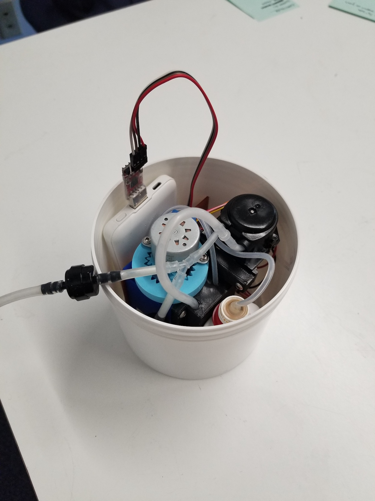
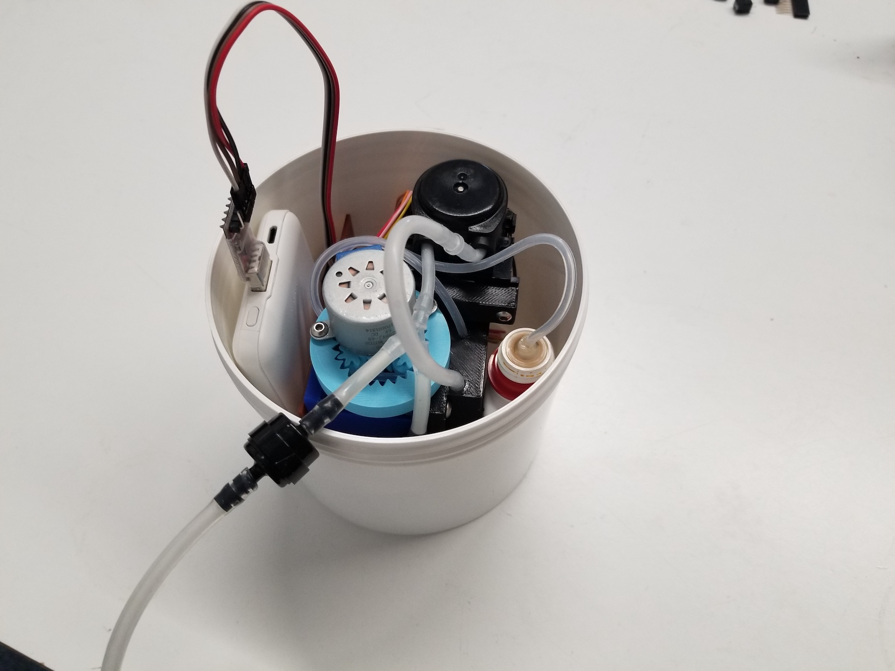
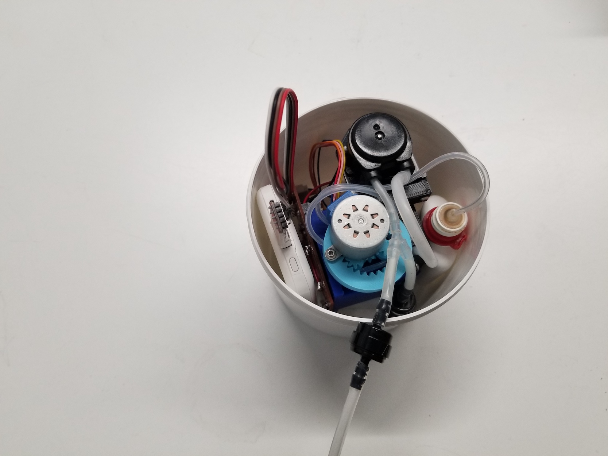
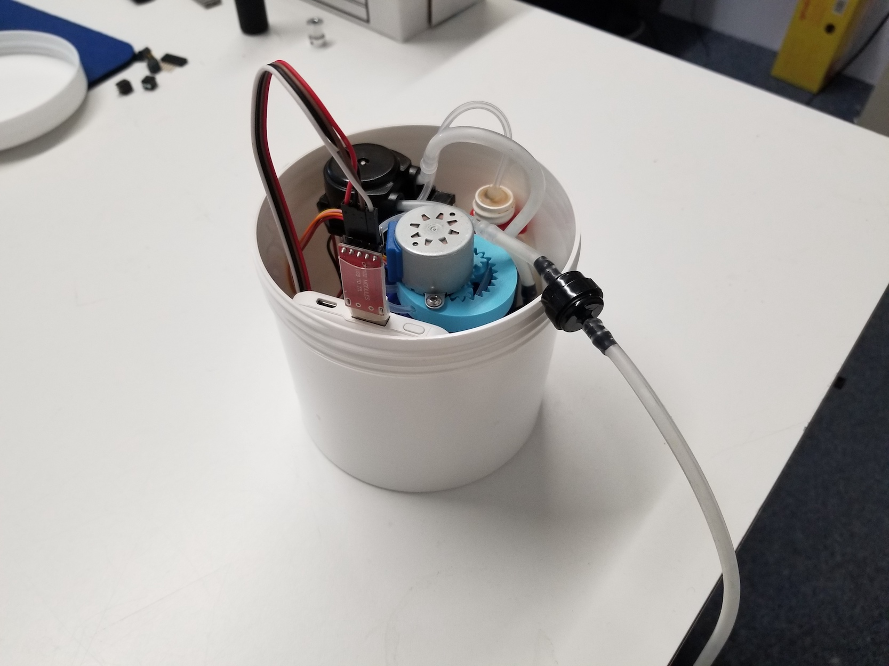
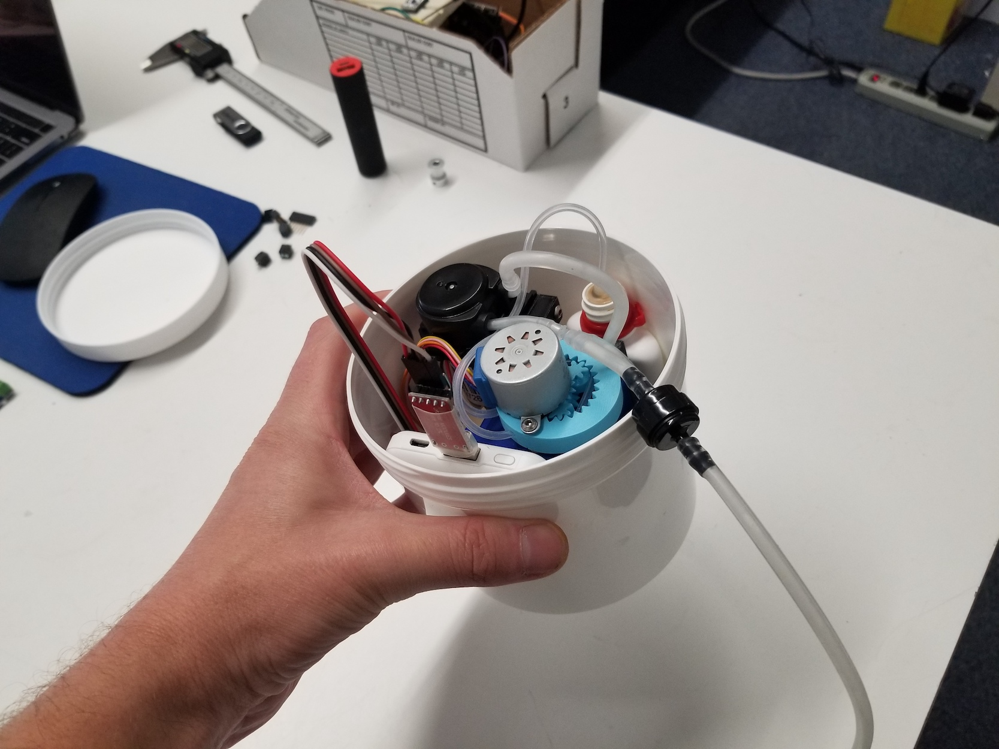
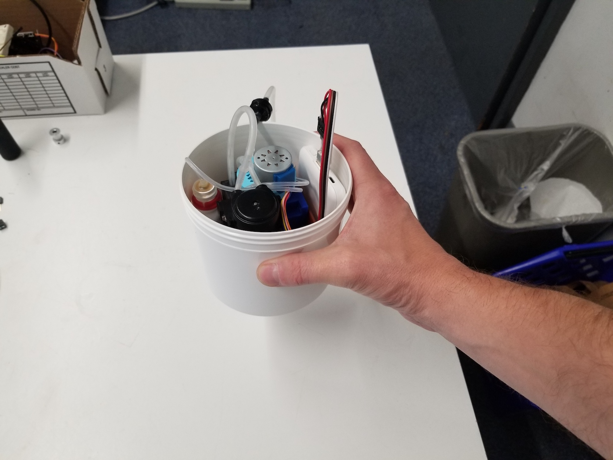
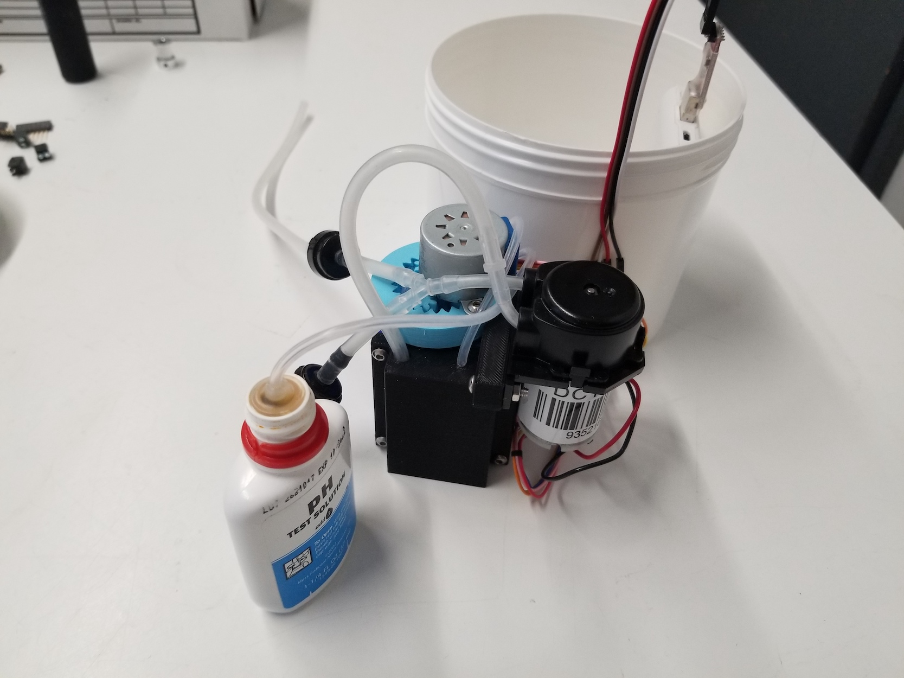
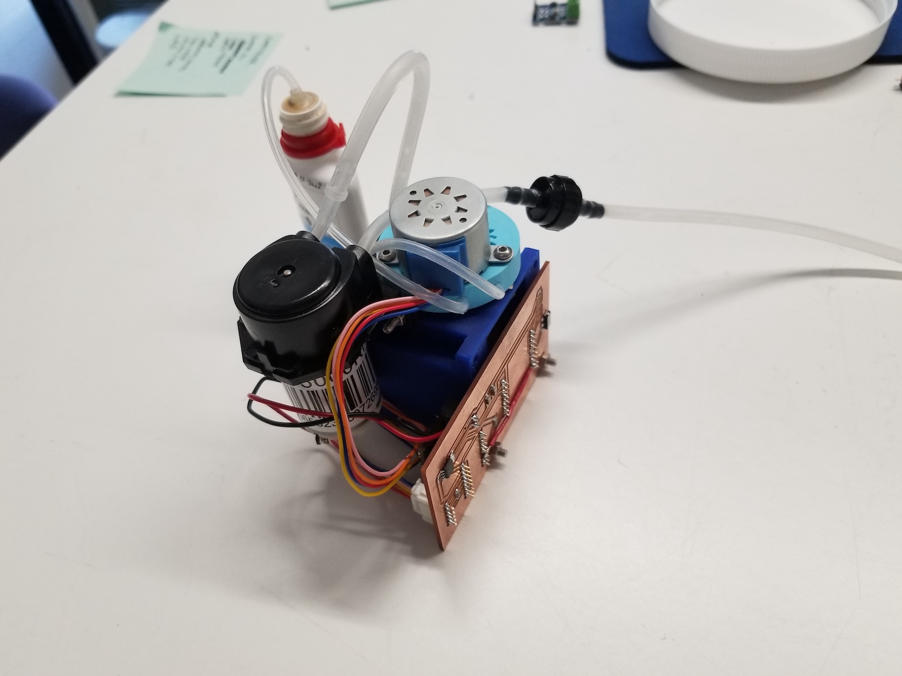
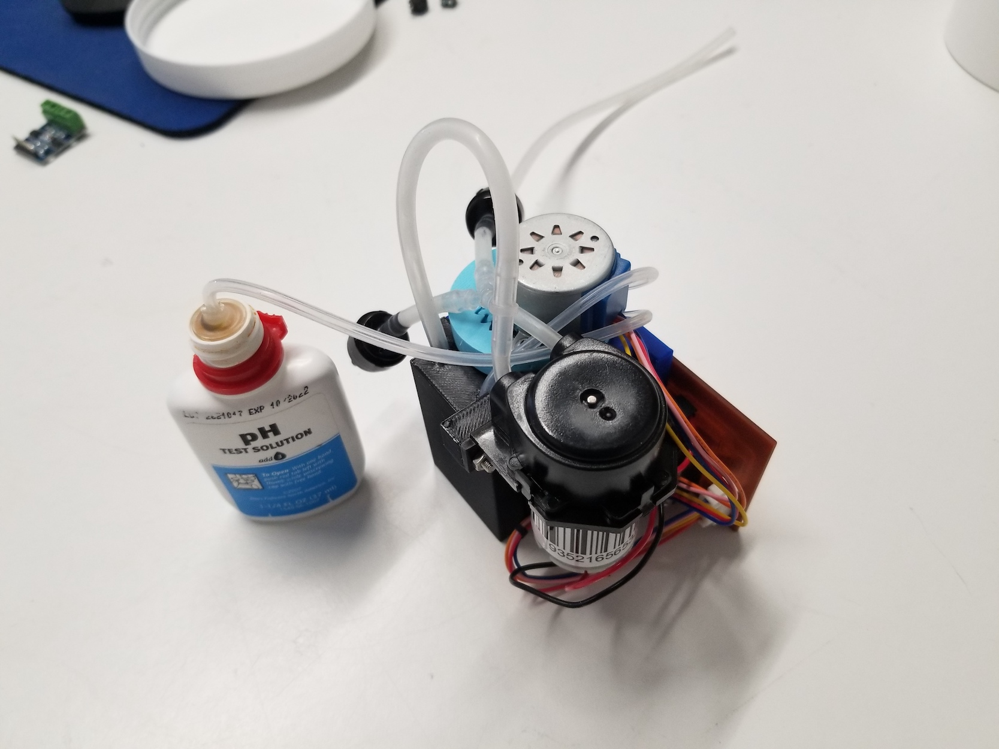
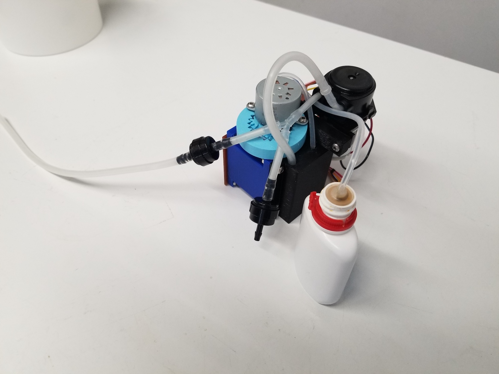

<!-- <topbar style="display:none;">
<item><a href="../index.html">Home</a></item>
<item><a href="../about.html">About</a></item>
</topbar>
-->
### Update Apr 18, 2022
I assembled all of the components in a plastic tub. Unfortunately, the mass distribution is not good, and the tub tips over when it's placed in water. That means I need to distribute mass over a wider area. I was hoping to avoid that, because it means that the footprint of the device needs to grow larger.
Especially if we want to add additional solutions/pumps/motors, we're going to need more space, so the device won't be as compact as I'd hoped. We could move the battery off-board, but it doesn't save that much weight/volume, and eventually we'll want everything self-contained.
For the pH solution, I simply cut the nozzle so I could insert the silicone tube. I think that's a fine approach, even for a product, unless/until we're making our own solutions.
Right now the tube to collect samples just hangs off the side. It could go through the bottom of the container instead, but this seems fine for now.
The waste water drains just to the bottom of the container (the battery and motor are elevated so they don't get wet). It would need to be emptied after every ~20 tests.
<!-- Gallery -->
<div class="row">
<div class="col-lg-4 col-md-12 mb-4 mb-lg-0">










</div>
</div>
<!-- Gallery -->
### Update Apr 16, 2022
Some changes had to be made to the first PCB.
- I had tried using the H-Bridge A4953 to drive the pump. However, this requires an 8V+ supply, and we're kind of trying to avoid higher voltages. So, for this version I will solder on a L9110 module, but for future versions I will update the design to use a L9110 chip instead of A4953.
- I had to add a logic voltage supply to the stepper driver, had forgotten that initially.
Peristaltic pump: Assembly is too tight.
- Consider using larger diameter tubing. Could all tubing be same diameter? How fast could a peristaltic pump with a stepper motor be?
- Or, just make a larger cavity for the tube in the 3D print.
### Update Mar 10, 2022
I have been working on this when I can find time. I designed and made the custom PCB, although it's not working perfect yet and I need to make some adjustments.

### Update Jan 16, 2022
Here's an update working toward the goal of an automated pH test, using a conventional chemical aquarium test kit. The video below shows that we're most of the way there!
<video width="640" height="480" controls>
<source src="./pH_demo.mp4" type="video/mp4" >
</video>
The stainless steel bowl represents the water tank to be tested, and the clear plastic container is a waste receptacle. A small-diameter pump first pumps 3 drops of pH testing solution. Then, a larger diameter pump adds 5 mL of water to the testing chamber from the bottom, thereby stirring the solution as it is pumped in. Next, the LED flashes and the camera takes a picture. (Unfortunately there are too many wires blocking my ability to put it in the right position to photograph the testing chamber, but that's the next thing to fix).
Then, the larger diameter pump switches direction, allowing the water to be pumped out. The larger diameter pump is outfitted with one-way valves, such that in one direction it draws water from the body and pumps it to the testing chamber, and in the other direction it draws water from the testing chamber and pumps it to the waste receptacle. When clearing the testing chamber, it is important that the pump not only clear the testing chamber, but also the tube itself all the way to the y-valve that separates input from output. This ensures that none of the waste water remains in the tube to be pumped back into the testing chamber.
In the demo, the water enters the testing chamber and then is removed. This could still leave some residue in the testing chamber. It seems like it would be a good idea to run a "flush cycle" at least once after tests to better clean out the testing chamber.
The video speed is 10x -- so in reality it takes closer to 2 minutes to perform a test. We can speed that up quite a bit if necessary (for example, use a larger diameter pump for the testing solution, user a higher voltage for the water pump, etc.). But maybe it's okay if it takes that much time?
Immediate Next Steps:
* Design PCB to hold all electronics. How many pumps should it be able to power, eventually?
* Assemble prototype, test photo quality
* Finish programming, image processing algorithm
Later Steps:
* Modify peristaltic pump design to be a bit looser (currently requires too much force, occasionally skips steps).
* Design container to hold the testing solutions (4x? or more?)